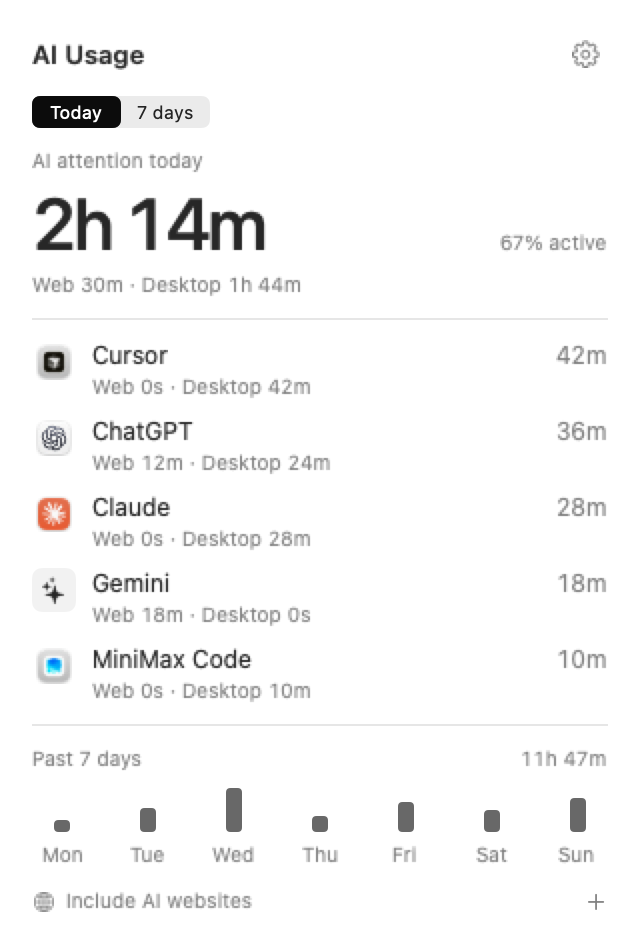

One tool. One total.
Web and desktop time combine automatically. A small breakdown beneath each tool tells you where you spent it.

AI UsageA small app for your Mac
ChatGPT in a tab. Cursor on your desktop.
All your AI time, quietly brought together.
Free & open source · macOS 13 or later
Early preview. The download isn’t notarized yet.
Build from
source, or read the installation notes first.

ChatGPT · Claude · Cursor · Gemini · Codex · MiniMax · and more
Less dashboard. More perspective.
Web and desktop time combine automatically. A small breakdown beneath each tool tells you where you spent it.
Today’s recorded AI attention stays a glance away. Open the panel for your tools, or switch to the past seven days.
Activity stays in a local database on your Mac. Pause, export or delete it whenever you want. No account required.
A quieter kind of analytics
Silent demo · Actual native interface with sample data · Built with HyperFrames
A useful distinction
AI Usage measures active foreground time. It doesn’t measure background agents, token consumption, subscription limits or productivity.
Website identification is opt-in and needs macOS Automation permission. Only recognized AI domains are saved—never prompts, page contents or full URLs. Generic browser and terminal time doesn’t count as a specific AI tool.
Read the privacy notesBuilt in the open
Try it. Tell us what would make it more useful. Or make it your own.